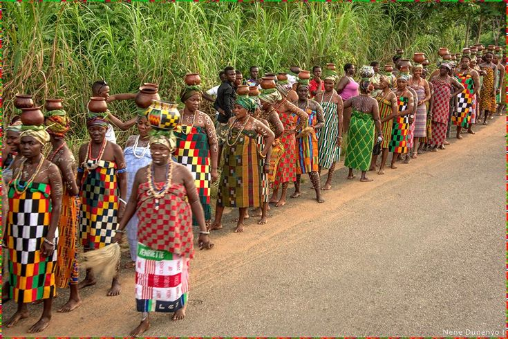

WHO WE ARE
The people of the Volta Region are popularly known as Voltarians (French: Voltaiens). This group includes the Ewes, Guans and other minor tribes living in the Volta Region. The people of the Volta Region are popular known for their rich cultural display and music some of which include Agbadza, Borborbor and Zigi.
Why Volta Region are called Number 9
Monica Amekoafia (30 June 1934 – 24 June 1990) was a Ghanaian and the winner of the first edition of the Miss Ghana contest in 1957 while representing the Trans-Volta Togoland. She was contestant Number 9. It was from her number that people from the Volta Region are called Number 9.
5 ethnic groups in Ewe
Subdivisions of the Ewe include the Anglo (Anlo), Bey (Be), and Gen on the coast, and the Peki, Ho, Kpando, Tori, and Ave in the interior. Oral tradition suggests that the Ewe immigrated into Ghana before the midfifteenth century.

rolling hills and valleys, with rocky outcrops, lagoons, rivers and waterfalls

Akple, a traditional meal of the Ewe